Esercitazione: La verosimiglianza in R
Segmento 1 — Applicazioni alla pratica clinica
![]()
29 ottobre 2026
Obiettivi del segmento
- Applicare la verosimiglianza a problemi reali della pratica psicologica.
- Usare R per esplorare diversi scenari clinici.
- Capire come i dati aggiornano la nostra conoscenza sui parametri.
Perché la verosimiglianza è importante per lo psicologo?
Ogni giorno lo psicologo si chiede:
- Questo trattamento funziona davvero?
- Il mio test di screening è affidabile?
- I risultati del mio studio sono robusti?
La verosimiglianza ci aiuta a rispondere a queste domande.
Parte 1: efficacia dei trattamenti
Il contesto: valutare un trattamento
Uno psicologo vuole sapere se la CBT funziona per i suoi pazienti.
La domanda fondamentale:
qual è la probabilità \(\theta\) che un paziente risponda positivamente al trattamento?
Un piccolo studio clinico
Lo psicologo conduce uno studio pilota:
- 20 pazienti con depressione moderata;
- trattamento: 12 sedute di CBT;
- criterio di “risposta”: riduzione ≥ 50% dei sintomi.
Risultato osservato: 12 pazienti su 20 migliorano.
Cosa possiamo concludere?
La proporzione osservata è:
\[ \hat{\theta} = \frac{12}{20} = 0.60 \quad (60\%) \]
Ma questa è solo una stima.
Quanto siamo sicuri che il vero valore di \(\theta\) sia vicino a 0.60?
Costruiamo la verosimiglianza
La funzione di verosimiglianza risponde a questa domanda:
“Alla luce dei dati osservati, quanto è plausibile ciascun possibile valore del parametro \(\theta\)?”
Visualizziamo
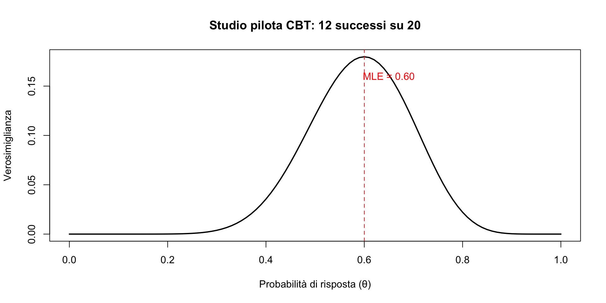
Come leggere questo grafico
- Il picco è a \(\theta = 0.60\): questo è il valore \(\theta\) più plausibile
- Ma la curva è larga: anche valori tra 0.40 e 0.80 sono ragionevolmente plausibili.
- Con solo 20 pazienti, c’è molta incertezza.
Domande che possiamo porci
Il trattamento è migliore del caso? (cioè, \(\theta > 0.50\)?)
Se replicassimo lo studio con più pazienti, cosa cambierebbe?
Come si confronta il nostro risultato con la letteratura?
Domanda 1: il trattamento funziona?
Se il trattamento non avesse alcun effetto (come lanciare una moneta), ci aspetteremmo \(\theta = 0.50\).
Confrontiamo la verosimiglianza di \(\theta = 0.50\) con quella di \(\theta = 0.60\):
Rapporto di verosimiglianza
Interpretazione:
il valore \(\theta = 0.60\) è circa 1.5 volte più verosimile di \(\theta = 0.50\), dati i nostri risultati.
È un’evidenza a favore dell’efficacia, ma non schiacciante.
Visualizziamo il confronto
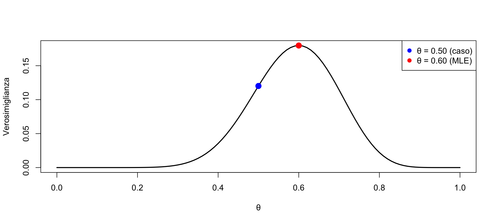
Entrambi i punti sono sulla curva, ma 0.60 è più in alto.
Domanda 2: cosa cambia con più pazienti?
Immaginiamo di replicare lo studio con 100 pazienti, ottenendo la stessa proporzione (60 successi su 100).
Confronto visivo
# Normalizziamo per confrontare le forme
plot(theta, verosim/max(verosim), type = "l", lwd = 2,
xlab = "θ", ylab = "Verosimiglianza normalizzata",
main = "Effetto della dimensione del campione")
lines(theta, verosim_100/max(verosim_100), col = "blue", lwd = 2)
legend("topright", c("n = 20", "n = 100"), col = c("black", "blue"), lwd = 2)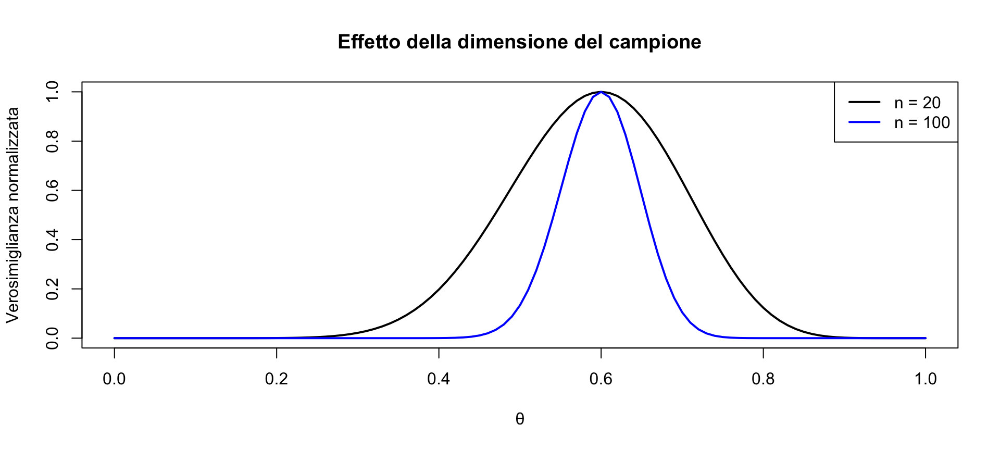
Interpretazione
Con 100 pazienti (curva blu):
- la stima rimane \(\hat{\theta} = 0.60\);
- ma la curva è molto più stretta;
- valori come \(\theta = 0.50\) diventano molto meno plausibili.
Verifichiamo numericamente
[1] 7.489869Con 100 pazienti, \(\theta = 0.60\) è circa 7 volte più verosimile di \(\theta = 0.50\).
L’evidenza è molto più forte!
Domanda 3: confronto con la letteratura
Le meta-analisi sulla CBT riportano tassi di risposta variabili.
Supponiamo che la letteratura indichi un tasso di risposta tipico del 50% per la depressione moderata.
Il nostro studio (60%) è compatibile con questo valore?
Risposta
Guardiamo la curva di verosimiglianza:
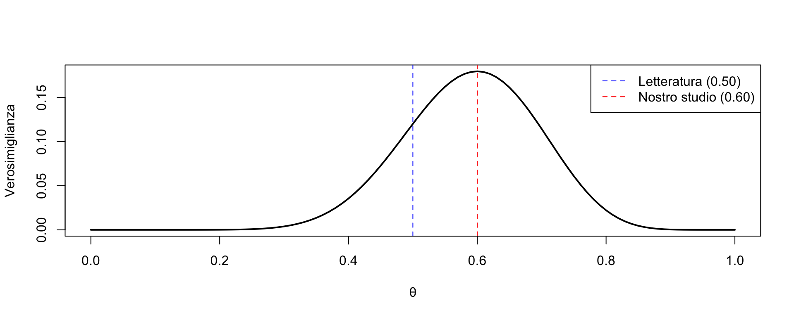
Interpretazione
La linea blu (\(\theta = 0.50\)) cade ancora in una zona dove la verosimiglianza è ragionevolmente alta.
Conclusione: con solo 20 pazienti, il nostro risultato (60%) è compatibile con il valore della letteratura (50%).
La differenza potrebbe essere dovuta alla variabilità campionaria.
Il messaggio chiave
| Campione | MLE | Incertezza | Evidenza vs θ=0.50 |
|---|---|---|---|
| n = 20 | 0.60 | Alta | Debole (LR ≈ 1.6) |
| n = 100 | 0.60 | Bassa | Forte (LR ≈ 7) |
La dimensione del campione determina quanto possiamo essere fiduciosi nelle nostre conclusioni.
Esercizio 1
Un altro studio sulla CBT ottiene 35 risposte positive su 50 pazienti (70%).
Compiti:
- calcola la MLE;
- costruisci la curva di verosimiglianza;
- il valore \(\theta = 0.50\) è ancora plausibile?
- confronta con il nostro studio (12/20).
Soluzione Esercizio 1 — Parte 1 e 2
[1] 0.7Soluzione Esercizio 1 — Parte 3
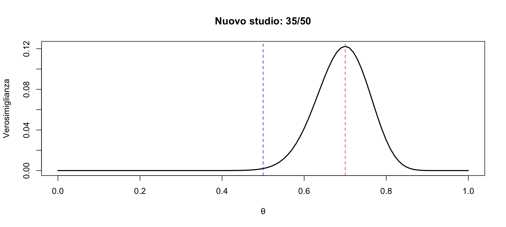
\(\theta = 0.50\) è molto lontano dal picco: non è plausibile.
Soluzione Esercizio 1 — Parte 4
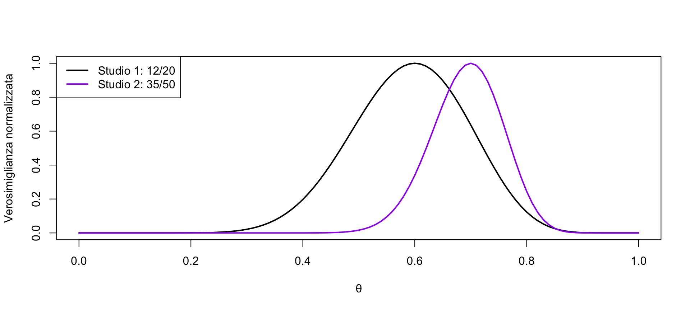
Interpretazione finale
I due studi suggeriscono valori diversi (60% vs 70%), ma le curve si sovrappongono parzialmente.
Con campioni così piccoli (20 e 50), non possiamo escludere che la differenza sia dovuta al caso.
Questo è il motivo per cui le meta-analisi (che combinano molti studi) sono così importanti in psicologia clinica.
Parte 2: Accuratezza diagnostica
Il contesto: validazione di un test di screening
Il Patient Health Questionnaire-9 (PHQ-9) è un questionario ampiamente usato per lo screening della depressione in contesto medico.
Secondo lo studio di Kroenke, Spitzer e Williams (2001), con un cut-off di 10, il PHQ-9 ha:
- sensibilità: 88% (probabilità di risultare positivo se si ha la depressione);
- specificità: 88% (probabilità di risultare negativo se non si ha la depressione).
Scenario:
in un piccolo studio di validazione locale, testiamo 30 pazienti con depressione maggiore confermata da gold standard (intervista clinica strutturata). Di questi, 25 risultano positivi al PHQ-9.
Compito:
valutare le stime della sensibilità e della specificità ottenute in questo studio con quelle fornite dalla letteratura e interpretare i risulati.
Stimare la sensibilità
Definizione:
sensibilità = \(P(\text{test positivo} \mid \text{paziente malato}) = \theta\).
Qual è la stima della sensibilità in questo campione? E quanto siamo sicuri di questa stima?
Calcolo della stima puntuale
[1] 0.8333333La nostra stima osservata è 83.3%, leggermente inferiore al valore di riferimento della letteratura (88%).
La verosimiglianza quantifica l’incertezza
library(ggplot2)
theta <- seq(0, 1, by = 0.01)
verosim <- dbinom(25, 30, prob = theta)
df <- data.frame(theta, verosim)
# Creazione del grafico
g1 <- ggplot(df, aes(x = theta, y = verosim)) +
# Curva di verosimiglianza
geom_line(color = "darkgreen", size = 1.2) +
# Linee verticali per i riferimenti
geom_vline(aes(xintercept = 0.88, color = "Letteratura (88%)"), linetype = "dashed", linewidth = 1) +
geom_vline(aes(xintercept = 0.833, color = "Nostra stima MLE (83.3%)"), linetype = "dashed", linewidth = 1) +
# Personalizzazione colori e legenda
scale_color_manual(name = "Riferimenti",
values = c("Letteratura (88%)" = "red",
"Nostra stima MLE (83.3%)" = "blue")) +
# Etichette e Titoli
labs(title = "Incertezza nella stima della sensibilità del PHQ-9",
subtitle = "(25/30 positivi)",
x = "Sensibilità (θ)",
y = "Verosimiglianza L(θ)") +
theme(legend.position = "bottom")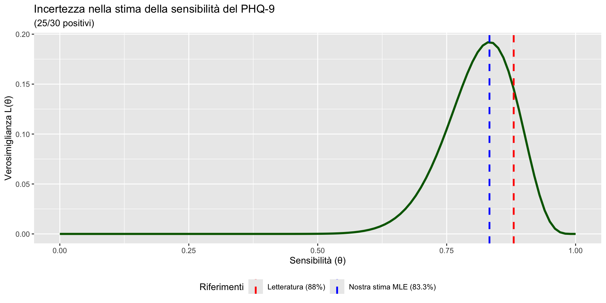
Interpretazione clinica
Cosa ci dice la curva?
- La stima più plausibile per i nostri dati è 83.3% (picco della curva).
- Il valore della letteratura (88%) cade nella parte alta della curva ed è ancora molto plausibile.
- L’ampiezza della curva riflette l’incertezza campionaria: con soli 30 pazienti depressi, la stima ha un margine di errore considerevole.
Conclusione prudente:
- la discrepanza tra il nostro risultato (83.3%) e quello riportato in letteratura (88%) è compatibile con la variabilità campionaria;
- non abbiamo evidenza sufficiente per dire che la sensibilità del PHQ-9 sia diversa nel nostro contesto.
Stimare la specificità
Definizione:
specificità = \(P(\text{test negativo} \mid \text{paziente sano}) = \phi\).
Qual è la stima della sensibilità in un nuovo campione? E quanto siamo sicuri di questa stima?
Nuovo scenario:
nello stesso studio, testiamo anche 50 pazienti senza depressione (gold standard negativo). Di questi, 38 risultano negativi al PHQ-9.
Compito:
- calcolare la specificità stimata;
- valutare se il valore di letteratura (88%) è plausibile, per i nostri dati;
- confrontare l’incertezza della specificità con quella della sensibilità.
Soluzione: stima puntuale della specificità
[1] 0.76Risultato: 76% (38/50), sensibilmente inferiore all’88% della letteratura.
Verosimiglianza della specificità
verosim_spec <- dbinom(38, 50, prob = theta)
g2 <- ggplot(data.frame(theta = theta, L = verosim_spec), aes(x = theta, y = L)) +
geom_line(color = "purple", linewidth = 1.5) +
geom_vline(xintercept = c(0.88, 0.76),
color = c("red", "blue"),
linetype = "dashed", linewidth = 1
) +
labs(
title = "Specificità del PHQ-9: verosimiglianza",
x = "Specificità (θ)",
y = "L(θ)", color = "Riferimenti"
) +
annotate("text", x = c(0.88, 0.76),
y = rep(max(verosim_spec) * 0.9, 2),
label = c("88% (letteratura)", "76% (nostra stima)"),
color = c("red", "blue"), hjust = c(-0.1, 1.1))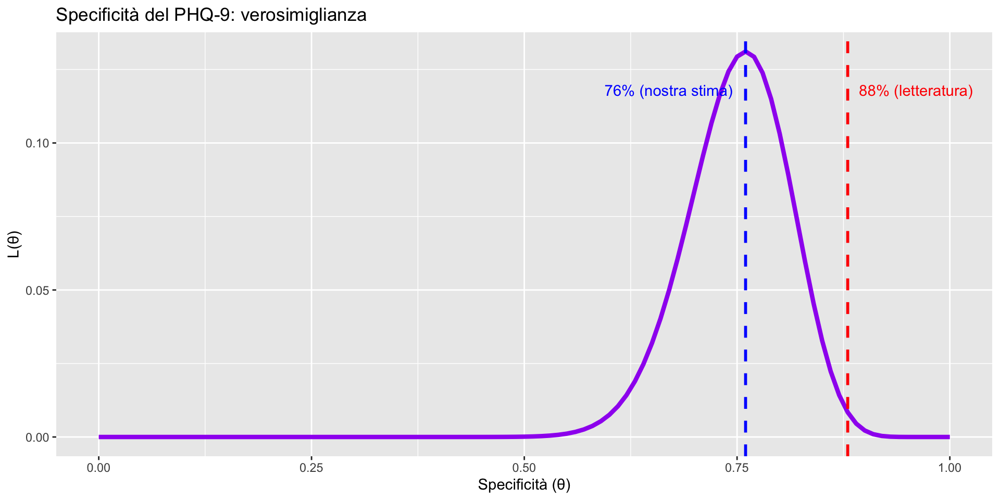
Discussione: sensibilità vs. specificità
| Caratteristica | Sensibilità | Specificità |
|---|---|---|
| Stima MLE | 83.3% | 76.0% |
| Letteratura | 88% | 88% |
| \(n\) | 30 | 50 |
| Compatibilità | Alta (88% è nella parte alta della curva) | Bassa (88% è nella coda estrema della curva) |
Interpretazione clinica
- Per la sensibilità, la differenza è plausibilmente dovuta al caso.
- Per la specificità, il nostro risultato (76%) è molto meno compatibile con il valore della letteratura (88%).
- Questo suggerisce che, nel nostro contesto clinico, il PHQ-9 potrebbe produrre più falsi positivi rispetto a quanto atteso.
Conclusione:
la verosimiglianza ci permette di distinguere tra differenze attribuibili alla variabilità campionaria e differenze che richiedono ulteriori indagini.
Parte 3: confronto tra gruppi
Opzione 1 (Più coinvolgente e orientata alla decisione clinica)
Il contesto: la sfida dei nuovi formati terapeutici
La terapia cognitivo-comportamentale (CBT) si sta rapidamente espandendo verso formati digitali (app, piattaforme online, telemedicina), promettendo maggiore accessibilità e scalabilità.
Ma una domanda cruciale rimane aperta per clinici e ricercatori:
I nuovi formati digitali riescono a mantenere la stessa aderenza al trattamento dei metodi tradizionali faccia-a-faccia?
Le evidenze aggregate (meta-analisi):
- CBT tradizionale (faccia-a-faccia): 82.4% di completamento.
- CBT digitale (app + supporto telefonico): 72.9% di completamento.
Un divario di quasi 10 punti percentuali che merita attenzione.
Domanda clinica:
questa differenza di circa 10 punti percentuali è rilevante in un reale contesto clinico?
Il nostro studio pilota
Abbiamo condotto uno studio pilota per testare la fattibilità dei due formati:
| Gruppo | Pazienti arruolati | Completamenti | Tasso osservato |
|---|---|---|---|
| CBT faccia a faccia | 22 | 18 | 81.8% |
| CBT digitale | 20 | 14 | 70.0% |
Differenza osservata:
11.8 punti percentuali a favore della CBT faccia a faccia.
Domanda statistica:
Questa differenza riflette un vantaggio reale del formato tradizionale, o potrebbe essere dovuta semplicemente alla variabilità campionaria?
Confronto tramite verosimiglianze normalizzate
# Calcolo delle verosimiglianze
verosim_faccia <- dbinom(18, 22, prob = theta)
verosim_digitale <- dbinom(14, 20, prob = theta)
# Creiamo un data frame combinato
df_confronto <- data.frame(
theta = rep(theta, 2),
verosim_norm = c(verosim_faccia/max(verosim_faccia),
verosim_digitale/max(verosim_digitale)),
formato = rep(c("CBT faccia a faccia", "CBT digitale"), each = length(theta))
)
# Valori MLE per le linee verticali
mle_faccia <- 18/22
mle_digitale <- 14/20g3 <- ggplot(df_confronto, aes(x = theta, y = verosim_norm, color = formato)) +
geom_line(linewidth = 1.2) +
geom_vline(xintercept = c(mle_faccia, mle_digitale),
linetype = "dashed",
color = "gray50",
alpha = 0.7) +
scale_color_manual(values = c("CBT faccia a faccia" = "#1f77b4",
"CBT digitale" = "#ff7f0e")) +
labs(
title = "Confronto verosimiglianze: aderenza a due formati CBT",
x = "Probabilità di completamento (θ)",
y = "Verosimiglianza normalizzata",
color = NULL
) +
theme(
legend.position = c(0.25, 0.90),
legend.background = element_rect(fill = "white", color = "gray80")
) +
scale_x_continuous(labels = scales::percent) +
scale_y_continuous(limits = c(0, 1.05))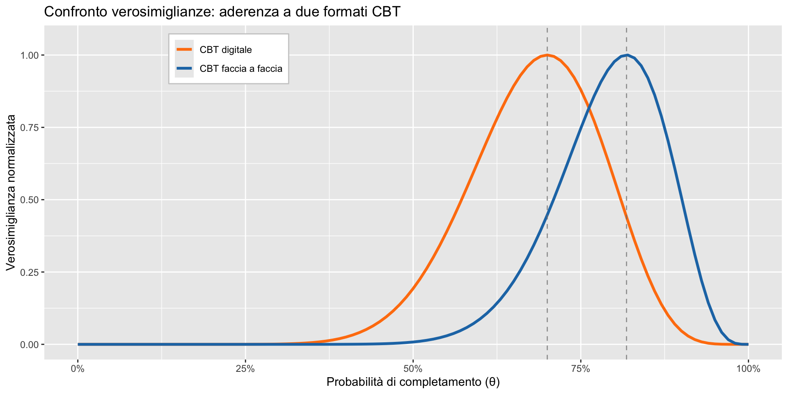
Interpretazione
- Stime puntuali diverse:
- CBT faccia a faccia: MLE = 81.8%;
- CBT digitale: MLE = 70.0%.
- Ma… ampia sovrapposizione:
Le due curve di verosimiglianza si sovrappongono in modo sostanziale per valori di θ tra circa 0.60 e 0.85.
- Conclusione prudente:
Con questi piccoli campioni (n≈20 per gruppo), non possiamo escludere che la vera probabilità di completamento sia la stessa per entrambi i formati.
La differenza osservata di ~12 punti percentuali è compatibile con la variabilità campionaria.
E se avessimo campioni più grandi?
Immaginiamo di replicare lo studio con campioni 10 volte più grandi, mantenendo le stesse proporzioni di completamento:
- CBT faccia a faccia: 180 completamenti su 220 pazienti (81.8%);
- CBT digitale: 140 completamenti su 200 pazienti (70.0%).
Domanda: come cambia il confronto tra le verosimiglianze? Otteniamo una maggiore certezza sulla differenza?
Verosimiglianze con campioni più grandi
# Calcolo delle verosimiglianze
verosim_faccia <- dbinom(180, 220, prob = theta)
verosim_digitale <- dbinom(140, 200, prob = theta)
# Creiamo un data frame combinato
df_confronto <- data.frame(
theta = rep(theta, 2),
verosim_norm = c(verosim_faccia/max(verosim_faccia),
verosim_digitale/max(verosim_digitale)),
formato = rep(c("CBT faccia a faccia", "CBT digitale"), each = length(theta))
)
# Valori MLE per le linee verticali
mle_faccia <- 180/220
mle_digitale <- 140/200g4 <- ggplot(df_confronto, aes(x = theta, y = verosim_norm, color = formato)) +
geom_line(linewidth = 1.2) +
geom_vline(xintercept = c(mle_faccia, mle_digitale),
linetype = "dashed",
color = "gray50",
alpha = 0.7) +
scale_color_manual(values = c("CBT faccia a faccia" = "#1f77b4",
"CBT digitale" = "#ff7f0e")) +
labs(
title = "Confronto verosimiglianze: aderenza a due formati CBT",
x = "Probabilità di completamento (θ)",
y = "Verosimiglianza normalizzata",
color = NULL
) +
theme(
legend.position = c(0.25, 0.90),
legend.background = element_rect(fill = "white", color = "gray80")
) +
scale_x_continuous(labels = scales::percent) +
scale_y_continuous(limits = c(0, 1.05))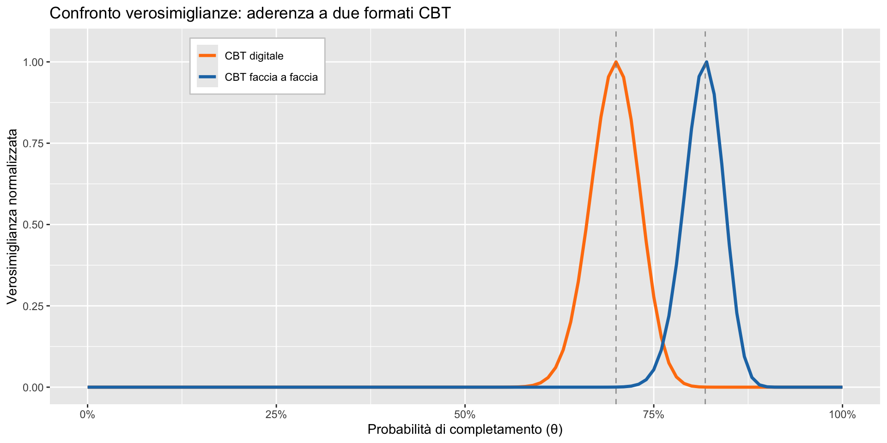
Interpretazione
Le curve sono molto più strette:
l’aumento della dimensione campionaria riduce drasticamente l’incertezza.La sovrapposizione è minima:
le due curve ora si sovrappongono solo marginalmente intorno a θ ≈ 0.76.Abbiamo maggiore certezza:
possiamo affermare con maggiore fiducia che esiste una differenza reale nell’aderenza tra i due formati, a favore della CBT faccia a faccia.
Messaggio chiave per la ricerca clinica
La verosimiglianza ci permette di:
- visualizzare l’incertezza nelle stime, specialmente con piccoli campioni;
- valutare se le differenze osservate siano statisticamente distinguibili;
- pianificare la dimensione campionaria: capire quanti pazienti servono per avere conclusioni affidabili.
Raccomandazione pratica
- Con studi pilota (\(n \approx 20\) per gruppo), si può identificare un “segnale” potenziale, ma servono campioni più grandi per confermare differenze clinicamente rilevanti.
- Questo spiega perché le meta-analisi (che combinano molti studi) sono così importanti per trarre conclusioni solide.
Parte 4: la log-verosimiglianza
Perché il logaritmo?
Con molti dati, la verosimiglianza diventa un numero molto piccolo.
Questi valori diventano difficili da gestire numericamente, soprattutto quando moltiplichiamo tra loro molte verosimiglianze (come nella verosimiglianza congiunta di un dataset completo).
- Il rischio è l’underflow numerico: il computer potrebbe arrotondare il prodotto a zero.
La soluzione
Il logaritmo trasforma numeri piccolissimi in numeri gestibili.
Proprietà importante
Il logaritmo è una trasformazione monotona crescente: se una funzione \(f(x)\) ha un massimo in \(\hat{x}\), allora anche \(\log f(x)\) ha un massimo nello stesso punto \(\hat{x}\).
Verifica con R:
Risultato:
entrambe le funzioni raggiungono il massimo in \(\theta = 0.60\), esattamente la proporzione osservata nel campione (300/500).
Conclusione:
possiamo massimizzare la log-verosimiglianza invece della verosimiglianza, ottenendo la stessa stima ma con maggiore stabilità numerica.
Grafico della log-verosimiglianza
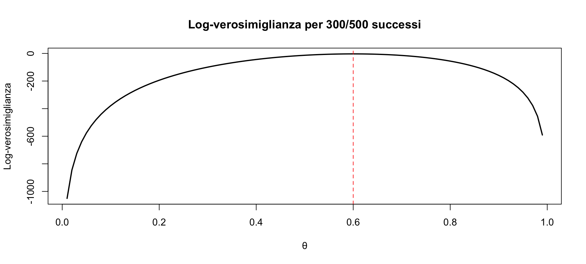
Quando usare la log-verosimiglianza?
- Sempre quando si lavora con campioni grandi.
- Quando si sommano verosimiglianze di osservazioni indipendenti.
- Nella pratica, è lo standard.
Riepilogo
La verosimiglianza quantifica quanto i dati supportano i diversi valori del parametro.
In psicologia clinica: ci aiuta a valutare l’efficacia dei trattamenti e l’accuratezza dei test.
Più dati = curve più strette = meno incertezza.
Il confronto tra curve ci dice se le differenze sono robuste.
La log-verosimiglianza è la forma pratica per i calcoli numerici.
Messaggio per la pratica
Come psicologo, la verosimiglianza ti permette di:
- interpretare i tuoi risultati con consapevolezza dell’incertezza;
- confrontare i tuoi dati con la letteratura;
- decidere se servono più dati prima di trarre conclusioni.
Per il prossimo segmento
Continueremo con:
- Verosimiglianza per dati continui (scale psicometriche)
- Combinare informazioni da più studi
- Introduzione al legame con l’inferenza bayesiana